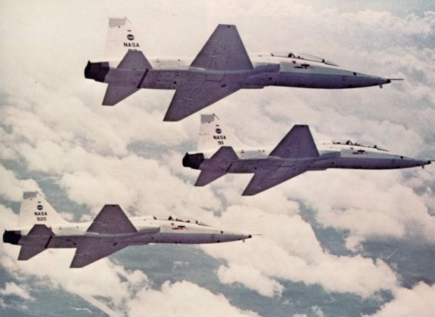
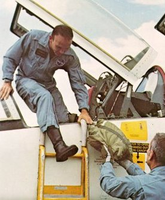
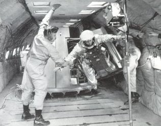
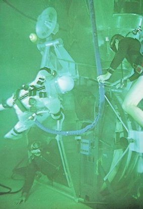
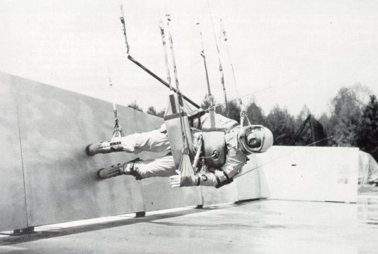

|  |
| A constant companion to an Astronaut during his training was the graceful twin-engined T-38, a two-seat jet that was fine for aerobatics. T-38's were handy for the incessant travel - to California, New York, the Cape, and way stations - that was called for by the policy of involving astronauts in spacecraft development. And to men who had in the main been expert test pilots, the agile T-38 was both a means of keeping sharp and a resource offering privacy and pleasure. |
|  | Mike Collins, left, lands after an exhilarating session of aerobatics. The T-38 was useful not just as a means of keeping piloting skills fine-honed but also to keep up g-load tolerances and inner-ear response to weightlessness. Plenty of flight hours before launch seemed to reduce the tendency toward nausea during initial exposure to weightlessness during spaceflight. |
|  |
| A parabolic flight path in a jet transport could create up to 30 seconds of zero gravity, enough to practice exit through a spacecraft hatch (above). Two earthbound simulations of reduced or zero gravity are shown at right and below. Wearing pressure suits carefully weighted to neutral buoyancy, astronauts in a big water tank learn the techniques needed to work effectively in space. Below, ingenious slings are supported by wires running to a trolley high above. The angled panels on which the man walks or runs are offset just enough from directly under the trolley to simulate the sixth of Earth gravity that prevails on the Moon. |
|  |